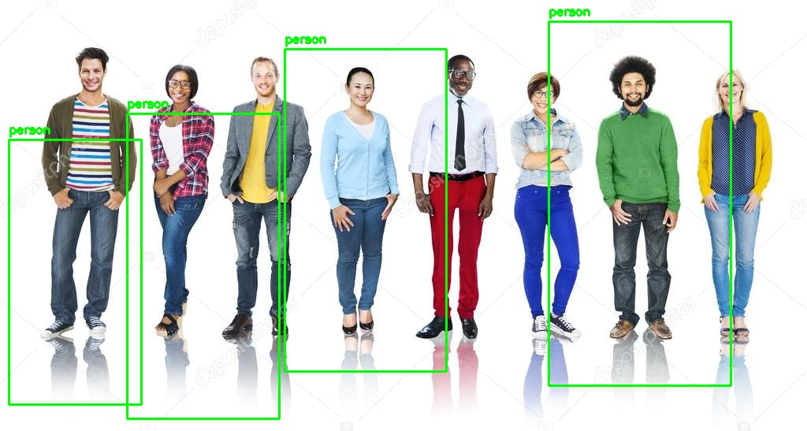

A learned classifier on hand-crafted features. Pedestrian detection, and the real historical bridge between fixed rules and deep learning.
Still hand-engineered features — gradient-direction histograms instead of Haar's light/dark rectangles — but the classifier is a trained SVM instead of an AdaBoost cascade. Level 1 and this level are actually the same category: hand-designed features plus a learned classifier. What changes here is feature quality — gradient orientation captures shape more robustly than raw intensity contrast — not whether learning happens at all. Level 3 is the real jump: fully learned features via a neural network, not just a learned classifier bolted onto hand-designed ones.
hog = cv2.HOGDescriptor()
hog.setSVMDetector(cv2.HOGDescriptor_getDefaultPeopleDetector())
boxes, weights = hog.detectMultiScale(img, winStride=(8,8), padding=(8,8), scale=1.05)HOG+SVM notoriously returns many overlapping duplicate boxes per person across scales and positions — getting clean single-box-per-person output required adding custom non-max suppression (IoU-based box collapsing). That's a standard, expected companion step for this detector, not optional polish.

Terminal output
people1.jpg -> Detected 4 pedestrian(s) after NMS
Saved annotated image as output1.jpgTerminal output
people4.jpg -> Detected 0 pedestrian(s) after NMS
Saved annotated image as output4.jpg